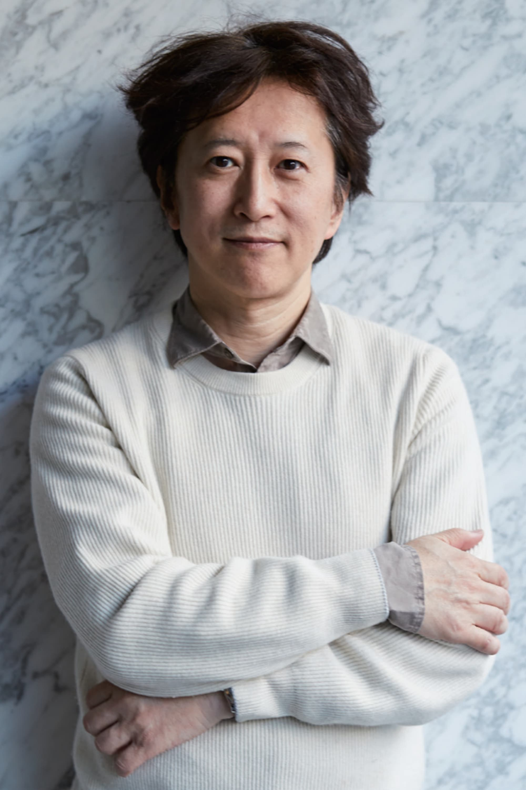

Что такое ДжоДжо?

JoJo's Bizarre Adventure или же Невероятные Приключения ДжоДжо - серия манги и аниме, рассказывающая о путешествиях членов семьи Джостаров из поколения в поколение. Автором и иллюстратором манги является Хирокико Араки, аниме-адаптацию сняли David Prodaction, персонажей 6 сезонов которых мы сегодня рассмотрим
